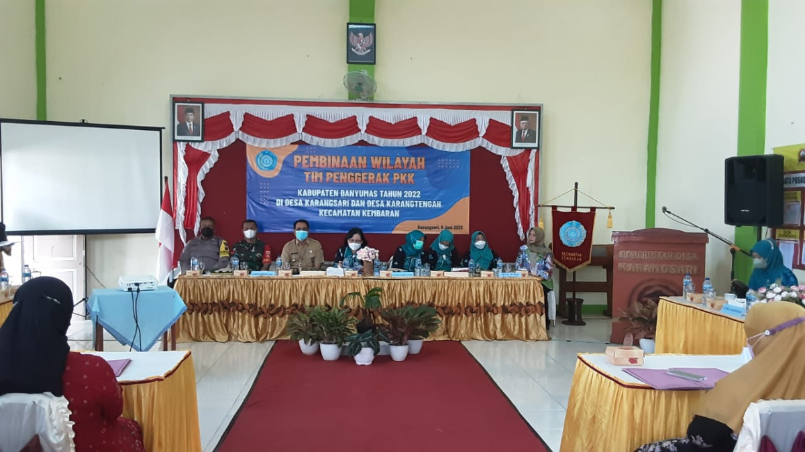
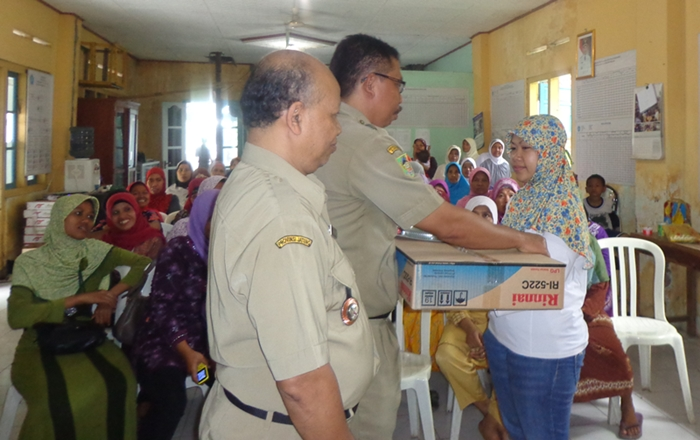
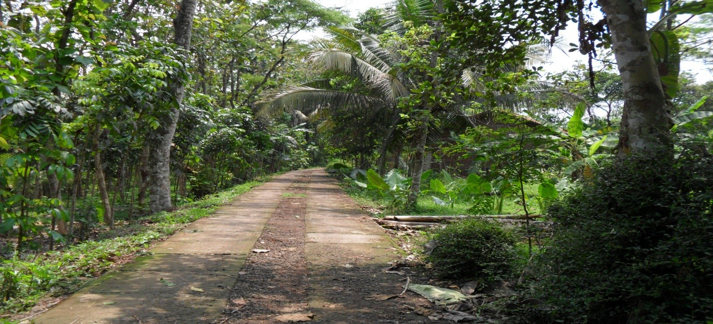

Visi

Terwujudnya Pemerintahan Desa Karangtengah yang Amanah, Bersih dan Adil Menuju Masyarakat yang Sejahtera, Berdaya saing dan Berbudaya, Berdasarkan Iman dan Taqwa.
Misi

Menciptakan Birokrasi Pemerintahan yang Profesional, Bersih, Partisipatif dan Inovatif agar terbangun Pemerintahan yang efektif serta terpercaya melayani Masyarakat dan Meningkatkan Kwalitas hidup Masyarakat melalui Akses Layanan Pendidikan dan Kesehatan yang Murah dan Berkwalitas.
Taman Candra

Taman Candra terletak di Desa Karangtengah Kecamatan Kembaran Kabupaten Banyumas. Di taman ini terdapat mata air belerang yang memiliki banyak manfaat salah satunya adalah bisa menyembuhkan penyakit gatal-gatal. Namun akses jalan menuju Taman Candra saat ini dapat dikatakan cukup sulit karena akses jalan yang belum memadai.